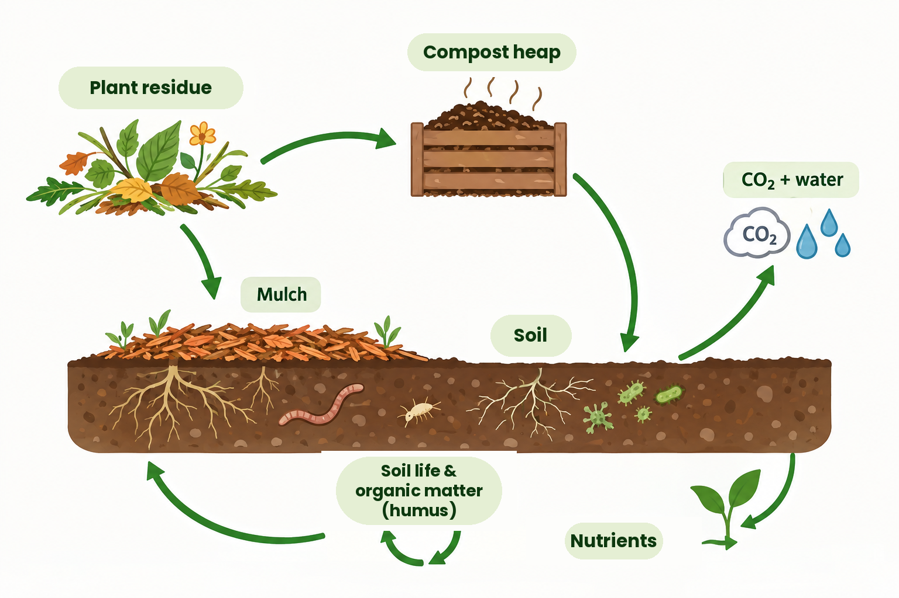

Compost, humus, mulch, organic matter: in most garden conversations these words get used as if they're interchangeable. That's understandable — they all belong to the same cycle — but they really are different things, and the difference is more than a matter of vocabulary. It determines what you actually do with them in your garden.
Plant residue is the starting point: leaves, grass clippings, prunings, still fully recognisable as what they were. Mulch isn't a separate material at all, but a way of using material — a protective layer you lay on top of the soil, and it can just as easily consist of leaves, straw, or compost. Compost is plant material that bacteria, fungi and soil creatures have already largely broken down into a dark, crumbly mass, and it supplies nutrients to your plants relatively quickly. Humus, finally, is what's left once almost everything that could easily be broken down actually has been: a stable, hard-to-break-down fraction that can stay in the soil for decades to centuries.
That's where the distinction lies that clears up most of the confusion: compost mainly feeds the plant, humus mainly feeds the soil. Compost supplies the minerals your crops need right now. Humus barely provides any direct nutrition, but it's essential for your soil's structure — it holds water, binds minerals, and gives the ground that crumbly, "alive" texture you can feel under your fingers in a healthy garden.

Compost therefore doesn't simply turn into humus — that's too crude a shortcut. What happens to compost in the soil is an ongoing branching process: part of it becomes food for soil life again, part mineralises into nutrients for your plants, and only part eventually stabilises into something resembling humus. And along the way, some material simply disappears into the air as CO₂ — that's part of the deal, that's soil life doing its work, not a loss to worry about.
What does that mean for what you do in the garden? Mulching protects the soil immediately, while slowly being converted into nutrition and later structure. Adding compost is quick help for your plants. And leaving the soil undisturbed as much as possible — no digging, keeping it permanently covered — is what gives the slow formation of humus the chance to continue, because digging disturbs precisely that process and speeds up decomposition, leaving less behind in the end.